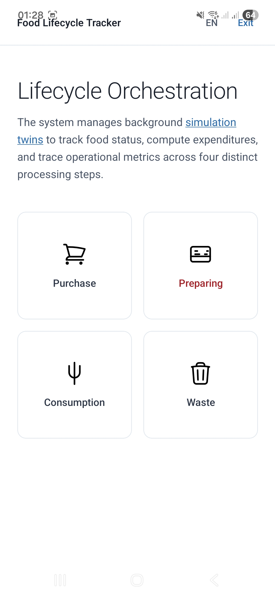
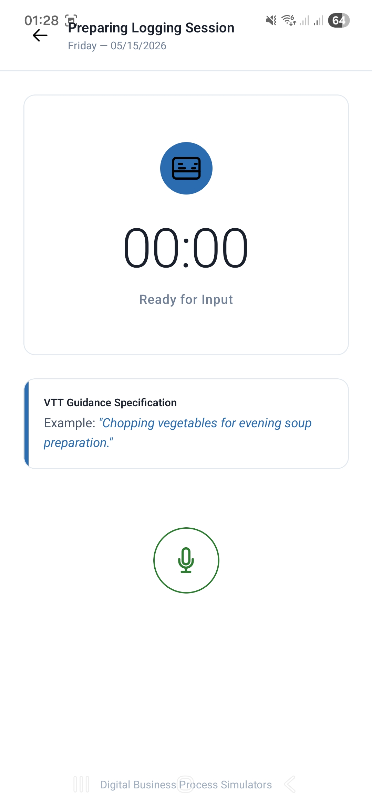
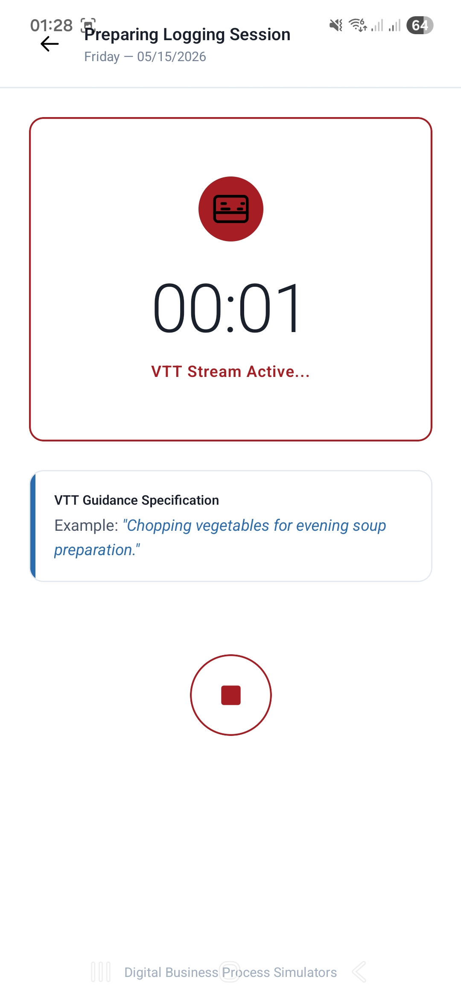
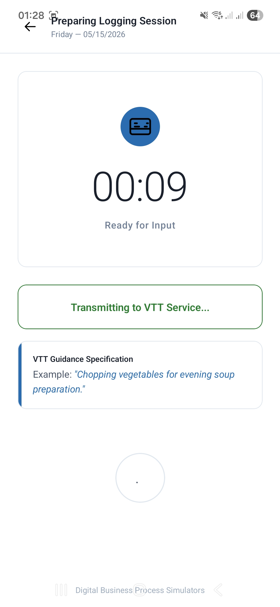
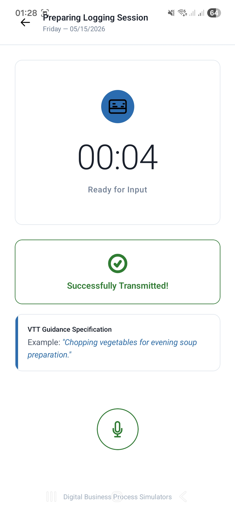

Функциональный анализ и бизнес-логика мобильной системы управления ‘цифровым холодильником’
Краткое руководство по операционным сценариям, интерфейсным контурам и логике учета запасов
1 Введение и назначение документа
Данная спецификация представляет собой описание бизнес-логики и операционных сценариев мобильного приложения FoodLifecycleApp, разработанного на фреймворке Flutter. Документ ориентирован на бизнес-аналитиков, менеджеров продукта (Product Owners) и проектировщиков интерфейсов (UX/UI), обеспечивая сквозное понимание правил движения данных и регламентов взаимодействия пользователей с системой.
Мобильное приложение функционирует как автоматизированное рабочее место (АРМ) управления ресурсами, позволяющее пользователям в режиме реального времени вести строгий учет оборачиваемости продуктов, контролировать сроки годности и минимизировать объемы выбрасываемой еды.
Интерфейсы и логика переходов спроектированы в рамках концепции совместно используемого периметра (Shared Edge Node):
Для реальных пользователей: Приложение сводит к минимуму когнитивную нагрузку и ручной клавиатурный ввод, автоматизируя добавление продуктов через сканирование чеков и теневые алгоритмы подсказок.
Для цифровых агентов (Симуляторов): Программные боты эмулируют шаги реальных людей, отправляя идентичные пакеты данных и проходя те же интерфейсные сценарии. Это позволяет накапливать консистентные массивы синтетических логов для стресс-тестирования бэкенда и проверки точности предиктивных алгоритмов.
2 Экраны интерфейсов (Эскиз) мобильного приложения (FoodLifecycleApp)
Шаг 2: Старт активности

Шаг 3: Выбор компании

Шаг 4: Выбор поля

Шаг 5: Выбор активности

Шаг 5: Выбор активности

Шаг 5: Выбор активности

3 Концепция Потребительского Аффинити (Умный подбор подсказок)
Для кардинального снижения времени, расходуемого пользователем на ведение учета, в систему внедрен фоновый механизм потребительского аффинити (Affinity)1.
Приложение непрерывно анализирует частоту покупок и сценарии потребления продуктов конкретным человеком. Если пользователь регулярно фиксирует добавление или потребление определенных продуктов(позиций) (например, молока или бананов), весовой коэффициент приверженности к этому продукту автоматически инкрементируется на сервере.
Эффект «Умного подбора» в интерфейсе: На основе таблицы аффинити приложение динамически перестраивает главный экран. Наиболее востребованные пользователем продукты автоматически выводятся в топ панели быстрых подсказок. Человеку больше не нужно каждый раз открывать глобальный номенклатурный каталог Master Data и вручную искать товар через поисковую строку — добавление или списание базовой корзины продуктов осуществляется в один клик. У этого подхода есть и другое применение “аффинити” используется для обеспечения более точной работы симулятора “цифровых двойников”.
4 Три ключевых этапа жизненного цикла ресурсов в АРМ
Сквозная бизнес-логика приложения координирует движение материальных ценностей (в данном случае продуктов) по трем последовательным операционным контурам.
4.1 Этап 1: Контур асинхронного импорта и петля верификации чеков
Процесс пополнения “цифрового холодильника” продуктами полностью избавлен от рутинного ручного ввода благодаря интеграции алгоритмов оптического распознавания (OCR).
В настоящей публичной документации отображены не все шаги и сценарии для приложения в частности и для системы цифровых симуляторв бизнес-процессов в общем.
- Принцип мгновенного освобождения интерфейса (Fire-and-Forget): Как пример в качестве одного из вариантов: вернувшись из торговой точки, пользователь выполняет фотофиксацию бумажного товарного (либо фискального) чека. Мобильный клиент мгновенно загружает снимок в облачное хранилище, выдает статус «Файл принят» и полностью разблокирует интерфейс. Пользователю не требуется удерживать экран открытым и ждать, пока нейросеть завершит тяжелый процесс распознавания табличных данных чека. Он может сразу свернуть приложение.
- Изоляция в буфере черновиков: Распознанный на сервере JSON-массив товаров не всегда попадает в мастер-инвентарь автоматически, так как текстовые строки чека могут содержать опечатки ИИ. Система сохраняет список во временный буфер в статусе черновика.
- Петля обратной связи (Feedback Loop): Фиксация черновика триггерит отправку асинхронного push-уведомления. Пользователь открывает экран «Черновики чеков», видит распознанный перечень товаров, осуществляет ручную правку возможных ошибок распознавания (используя автоподстановку из эталонного справочника) и нажимает кнопку «Подтвердить». Только после этого чистые данные «распаковываются» в постоянный инвентарь холодильника.
📱 Демонстрация контура PurchaseНа видео показан сквозной процесс инференса PyTorch MobileNetV2 при отправке фотографии апельсина с камеры мобильного устройства.
|
4.2 Этап 2: Контур приготовления пищи (COOK)
После того как продукты(в данном случае сырьевые компоненты) успешно добавлены в цифровой холодильник (fact_inventory), они становятся доступны для внутренних технологических изменений. Процесс приготовления пищи (кулинарной трансформации) описывает перевод сырья в категорию готовой продукции.
В настоящей публичной документации отображены не все шаги и сценарии для приложения в частности и для системы цифровых симуляторв бизнес-процессов в общем.
- Рецептурное списание: Пользователь выбирает из каталога Master Data конкретную технологическую карту (рецепт). Бизнес-логика приложения автоматически рассчитывает необходимые объемы сырья и выполняет каскадное списание (например, уменьшает доступный объем муки, молока и яиц в холодильнике).
- Генерация новой сущности: Взамен списанного сырья система мгновенно генерирует в инвентаре новую реляционную запись (например, «Блинчики») и присваивает ей признак переработанного продукта
is_cooked = TRUE. Это позволяет аналитическим алгоритмам корректно оценивать структуру запасов и предотвращать ложные рекомендации о покупке дублирующих исходных продуктов.
📱 Демонстрация контура CookНа видео показан сквозной процесс инференса PyTorch MobileNetV2 при отправке фотографии апельсина с камеры мобильного устройства.
|
4.3 Этап 3: Контур расхода, утилизации отходов и фонового голосового ввода
Заключительный этап жизненного цикла ресурсов описывает два полярных сценария выбытия продуктов с баланса: полезное использование и деструктивные потери.
4.3.1 Сценарий А: Прямое ручное потребление (CONSUME)
В штатном режиме, когда продукт съедается, пользователь фиксирует этот факт в один клик через панель быстрых подсказок на главном экране. Система выполняет мгновенное вычитание указанного объема ТМЦ из таблицы текущих запасов, переводя процесс в конечное событие и инкрементируя вес приверженности этого продукта в матрице аффинити.
В настоящей публичной документации отображены не все шаги и сценарии для приложения в частности и для системы цифровых симуляторв бизнес-процессов в общем.
📱 Демонстрация контура ConsumeНа видео показан сквозной процесс инференса PyTorch MobileNetV2 при отправке фотографии апельсина с камеры мобильного устройства.
|
4.3.2 Сценарий Б: Утилизация отходов (WASTE) и голосовая запись (фоновый голосовой отчет)
Если продукт испортился, бизнес-регламент обязывает зафиксировать факт его списания в мусорку с обязательным указанием причин порчи (например, «пропало», «истек срок годности»). Это необходимо для форензик-анализа(Forensic Analysis)2 теневой экономики кухни и расчета чистых финансовых потерь.
В настоящей публичной документации отображены не все шаги и сценарии для приложения в частности и для системы цифровых симуляторв бизнес-процессов в общем.
Чтобы избавить человека от ручного поиска испорченных продуктов из списка, на данном этапе применяется асинхронный голосовой ввод через Whisper-контур:
- Голосовой рапорт: Пользователь удерживает кнопку и наговаривает рапорт: «Выбросил испорченный сыр, две упаковки». Аудиофайл уходит на бэкенд, а интерфейс мгновенно разблокируется по принципу Fire-and-Forget.
- Текстовый черновик списания: Если ИИ распознал интент нечетко, пользователю на экран прилетает черновик текстовой записи рапорта списания (а не чека!). Человек пальцем правит опечатку нейросети в тексте (например, заменяет «сыч» на «СЫР РОССИЙСКИЙ») и нажимает «Ок». Система списывает объем из инвентаря и фиксирует прямой ущерб в аналитическом логе потерь (
waste_log).
📱 Демонстрация контура WasteНа видео показан сквозной процесс инференса PyTorch MobileNetV2 при отправке фотографии апельсина с камеры мобильного устройства.
|
5 Автоматическое управление жизненным циклом при бездействии
В отличие от агротехнического трекера, где сессия привязана к часам работы сотрудника на поле, в продуктовом трекере (версия для предприятий) сессионный тайм-аут контролирует срок годности и порчу самих ресурсов.
Если пользователь свернул приложение, заблокировал экран или уехал в отпуск, оставив скоропортящиеся продукты в “цифровом холодильнике”, система не оставляет эти записи неизменными. По истечении нормативного срока хранения (например, через 3 дня для категории молока) фоновые планировщики бэкенда выполняют автоматичесую пометку на принудительное списание ресурса либо выполняют автоматическое принудительное списание ресурса и отправляют уведомление пользователю. В обычной жизни такие продукты могут не сразу выбрасывать находя им дополнительное применение, однако в случае использование системы на предприятии такой функционал есть.
Система молча переводит статус продукта в EXPIRED, списывает его остатки в ноль и формирует алерт о пассивных финансовых потерях. При следующем открытии приложения пользователь (организация) видит очищенный холодильник и получает аналитический push-отчет, стимулирующий его более бережно относиться к планированию закупок.
6 Перспективы развития платформы: Расширение операционных групп
Разработанная архитектурная модель shared-данных и общих рельсов оркестрации изначально спроектирована с учетом масштабируемости при расширении операционных групп. В рамках долгосрочного развития платформы запланирован последовательный переход от индивидуального домашнего трекинга к координации комплексных промышленных и корпоративных цепочек поставок.
В контур брокера сообщений Apache Kafka и персистентные (постоянные) таблицы СУБД закладываются расширения для поддержки двух новых операционных контуров:
- Группа автоматизированного ресторанного и пищевого ритейла (например для туристского кластера): Интеграция с умными торговыми автоматами, POS-терминалами продаж и весовыми датчиками на складах для автоматического списания остатков в момент пробития чеков.
- Группа беспилотной робототехники и умных зон хранения: Подключение автоматизированных конвейеров сортировки, роботизированных кухонных модулей и холодильных шкафов с компьютерным зрением (минуя ручной ввод пользователя). Роботизированные узлы будут передавать координатную телеметрию и данные о перемещении продуктов (как ТМЦ) напрямую в “цифровой холодильник”, формируя сквозные карты Process Mining для всего пищевого конвейера предприятия.
7 Заключение
Функциональный анализ и проектирование бизнес-логики клиентского периметра мобильного приложения FoodLifecycleApp на фреймворке Flutter позволило создать простое интуитивно понятное автоматизированное рабочее место управления “цифровым холодильником”, изолированное от ресурсоемких серверных вычислений.
Эргономика и минимизация ввода: Разделение контуров на асинхронный импорт чеков, фоновые алгоритмы умного подбора подсказок (Affinity) и бесконтактный голосовой ввод (Whisper) позволило свести когнитивную нагрузку на пользователя к минимуму. Экран мобильного устройства разблокируется практически мгновенно, не заставляя человека ожидать окончания работы тяжелых нейросетевых моделей.
Консистентность Master Data и учет потерь: Каскадные фильтры верификации текстовых черновиков и регистрация причин порчи в контуре
Wasteзащитили аналитический слой от потенциально слишком “грязных” данных. Автоматика фонового списания просроченных остатков гарантирует высокую точность и актуальность информации о балансе ресурсов даже при длительном бездействии пользователя.
Разработанная архитектурная модель является единым стандартом shared-периметра. Она обеспечивает эквивалентность операционного следа как для реальных людей, так и для автономных агентов цифрового симулятора, закладывая надежный фундамент для последующего сквозного анализа бизнес-систем и предиктивного моделирования.
Footnotes
Потребительское аффинити (Consumer Affinity) — это степень эмоциональной привязанности и близости потребителя к бренду (или в частном случае к продукту), основанная на совпадении ценностей, а не на рациональной выгоде (цене или скидках).↩︎
Форензик-анализ (Forensic Analysis) в отношении работников предприятия — это независимое внутреннее расследование, направленное на выявление, доказательство и пресечение корпоративного мошенничества, воровства, коррупции или утечки данных со стороны персонала↩︎